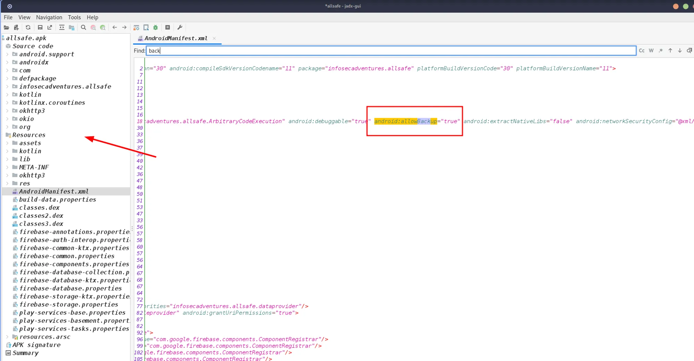
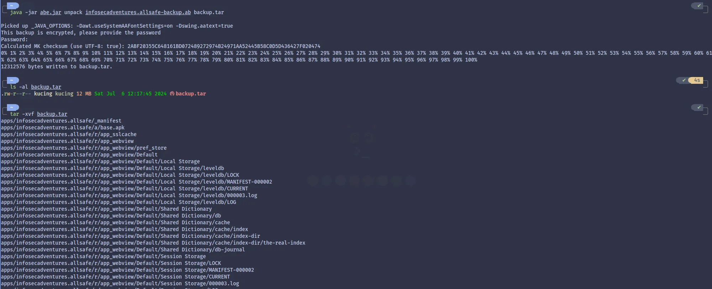
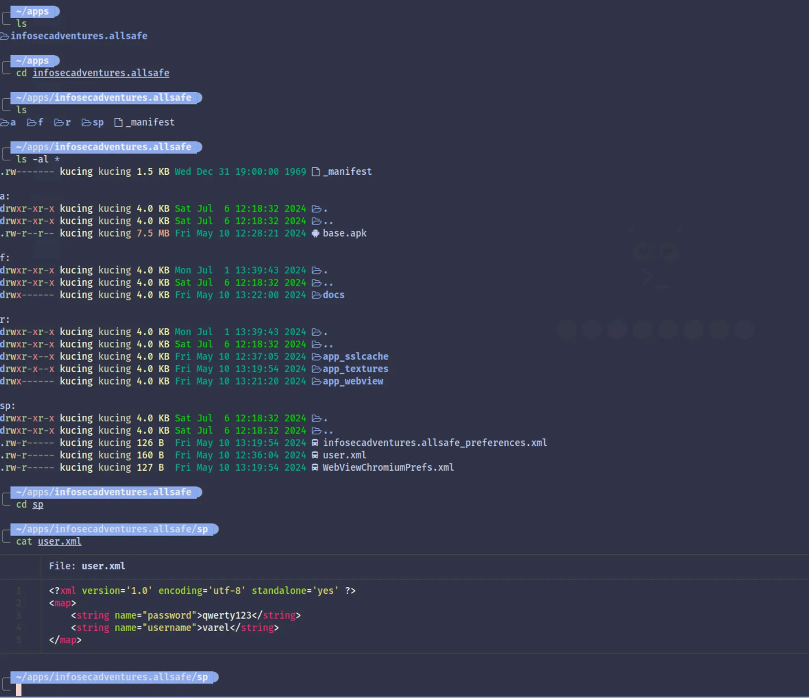

Backup Vulnerabilities Android Mobile Application
hello everyone today I will share about Android Backup Vulnerabilities, this is one of the findings that I often find when doing pentest on android applications, especially on mobile applications. I made this article because it was quite inspired by this blog Now lets just go straight to the discussion.
Android Backup Vulnerabilities are vulnerabilities where an application allows backups for the application, this vulnerability will be very impactful if the same application has Insecure data storage vulnerabilities, because the application’s internal files can be stolen without root, even though the android device must turn on usb debugging
How to look for it?
Check the androidmanifest.xml file and highlight the android:allowBackup text, if android:allowBackup = "true" this means that the application is vulnerable to android backup vulnerabilities, and vice versa if the value is false, it means that the android application is not vulnerable to Android Backup Vulnerabilities, it's easy, right? okay, continue to the demo.
Unpack the app using jadx and then open the Androidmanifest.xml file, this file is usually found in Resource

Using the adb (android debug brigde) tool, we try to backup the application folder with commands more or less like this, and don’t forget to connect the adb via usb or wireless.
adb backup -f <backup-name.ab> <app-package-name>
adb backup -f application com.app.info
Using ABE (Android Backup Extractor) convert .ab files to .tar so that they can be extracted, look like the picture below the internal application folder can be retrieved. When converting the abe tool, it will ask for the password that we created before

